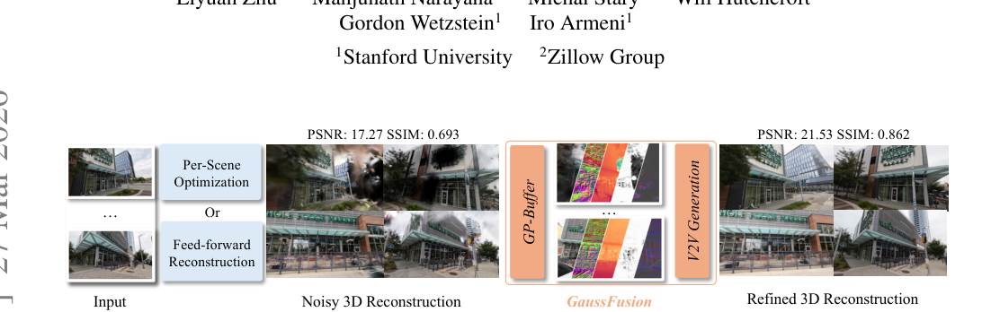
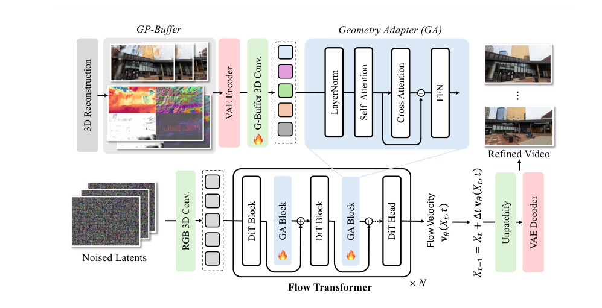
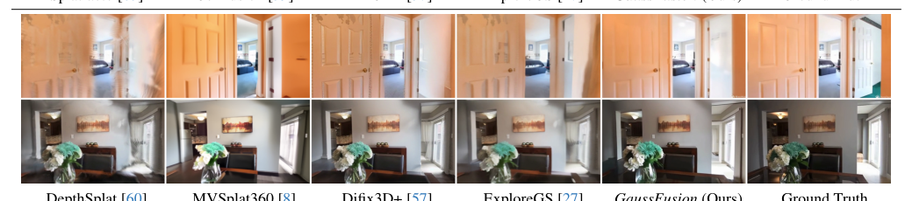
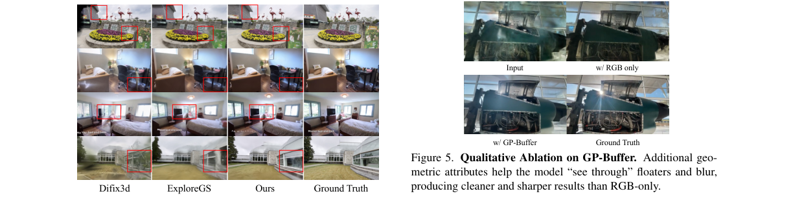
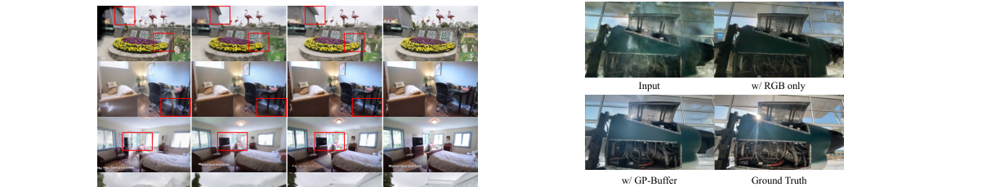

GaussFusion
简单摘要
3DGS 在真实采集场景中普遍存在三类伪影：漂浮体（floaters）、闪烁（flickering）和模糊（blur），根源分别是相机位姿误差、视角覆盖不足和几何初始化噪声。
现有仅靠 RGB 条件的生成修复方法（Difix3D+、GenFusion、ExploreGS）有两类根本局限：第一，对大型漂浮体、缺失区域、几何误差等严重伪影几乎无能为力；第二，专为优化式 3DGS 训练的修复模型无法泛化到前馈式重建（DepthSplat、MVSplat），反而引入新退化，反之亦然——论文实验中 Difix3D+ 和 ExploreGS 在 MVSplat 输出上 PSNR 均下降。
GaussFusion 在已有 3DGS 重建基础上做后融合增强：先从 Gaussian 图元属性中提取五路像素对齐信号组成 GP-Buffer（颜色 C、透明度 A、深度 D、法线 N、逆协方差 U），送进以 Wan-2.1-1.3B 为骨干的视频生成模型进行时序一致细化，再将生成的新视角帧反哺 3DGS 参数优化。

关键量化证据：DL3DV 数据集上 GaussFusion (Full) PSNR 达 22.55（基础 Splatfacto 为 17.42，+5 dB）；RE10K 上从 19.23 提升至 28.65（+9.4 dB）；4 步蒸馏变体仍达 22.49 PSNR、0.842 SSIM，速度为 15.11 FPS。

"几何约束的视频修复器"：目标不是让结果好看，而是让结果在 3D 上同样合理——且以接近实时（16 FPS）的速度做到。
核心创新
1）问题定义与研究动机
作者的核心论断：现有方法根本局限是"条件信息不够"——仅靠 RGB 渲染作为条件，当伪影严重时生成模型本质上在猜颜色，而非理解几何。
另一个被忽视的问题是跨管线泛化失败。优化式 3DGS 主要产生高频漂浮体和"针状"过拉伸 Gaussian（根源：过拟合/高方差）；前馈式方法产生低频模糊和全局深度扭曲（根源：回归均值/不确定性）。两类失效模式截然不同，导致专为一类管线训练的修复模型在另一类上有害。论文实验验证了这一点，Difix3D+/ExploreGS 在 RE10K 的前馈设置上 PSNR 均下降。
由此提炼出两个关键洞察：(i) 引入完整 3DGS 几何属性（深度、法线、透明度、协方差）而非仅 RGB；(ii) 构建覆盖两类退化的综合数据合成管线是泛化能力的关键来源。
2）GP-Buffer：统一几何信息接口
GP-Buffer 直接从已有 Gaussian 图元属性中提取五路像素对齐信号，无需额外 3D 重建步骤：
- 颜色 C：标准 alpha-blending 渲染图，携带纹理外观及颜色漂移/模糊等伪影特征；
- 透明度 A：每像素累积不透明度，低值区域通常是空洞，高覆盖下仍有大量 Gaussian 叠加则预示漂浮体；
- 深度 D：Expected Depth 模式（ED），暴露深度出血和表面不连续；
- 法线 N：相机坐标系位置图有限差分叉积归一化，提供表面朝向，仅在不透明度 $A > \tau$ 处计算以防轮廓混叠；
- 逆协方差 U：三通道各向异性/不确定性图——高频重建区域值大，低纹理/大 Gaussian 区域值小，作为"结构可信度指示器"，消融中带来最大单步 PSNR 增益（+0.79 dB）。
3）Geometry Adapter：高效几何注入
GA 以并行侧网络形式附着 Wan DiT 主干，每两个 DiT block 后插入一个 GA block，共 15 个 GA block，引入约 0.6B 参数（主干 1.3B，GA 占总参数 31%）。训练时主干全程冻结，仅更新 GA 层。相比全量微调 DiT，GA 方案收敛快约 2 倍（全 DiT 需 2× 训练时长才能追平），且消融实验中去掉 GA 改用简单卷积 PSNR 从 22.55 降至 20.90。
4）跨范式适配定量验证
RE10K 前馈修复实验：DepthSplat + GaussFusion PSNR 21.77→22.80；MVSplat + GaussFusion PSNR 18.74→19.76（与专为 MVSplat 定制的 MVSplat360 的 19.82 接近，但无需绑定特定架构）。联合训练（优化式 + 前馈式混合数据）比单数据集训练进一步提升，说明跨管线数据相互增益。
5）75K+ 伪影合成数据与 DMD 高效蒸馏
训练数据：75K+ 配对视频（DL3DV + RE10K），每视频 81 帧、480×832，文本描述由 Gemini-Flash-2.5 自动生成。四类退化：随机稀疏视角（5% 帧，非均匀）、多样化初始化（SfM / 随机点云 / MapAnything）、不同优化步数（3K/7K/30K）、前馈式退化（DepthSplat/MVSplat 三视角输入）。高效推理：DMD 蒸馏 → 4 步生成器 → 冻结主干仅微调 GA 层，最终达到 15.11 FPS。
技术细节
完整方法链路：初始 3DGS → 渲染 GP-Buffer 五路 → VAE 编码拼接 → Geometry Adapter 注入 Wan DiT → Flow Matching 视频细化 → B 样条轨迹采样新视角 → 反哺 3DGS 优化。
3DGS 基础表示与渲染
场景由 $N$ 个各向异性 3D Gaussian 图元组成：$\mathcal{G} = \{(\mathbf{p}_i, \alpha_i, \mathbf{c}_i, \mathbf{q}_i, \mathbf{s}_i)\}_{i=1}^N$，3D 协方差 $\mathbf{\Sigma}_i = \mathbf{R}_i\mathbf{S}_i\mathbf{S}_i^\top\mathbf{R}_i^\top$ 投影为 2D $\mathbf{\Sigma}_i' = \mathbf{J}\mathbf{W}\mathbf{\Sigma}_i\mathbf{W}^\top\mathbf{J}^\top$。像素颜色由深度排序 $\alpha$-合成：
$$ \mathbf{C}(\mathbf{u}) = \sum_{i=1}^{N} \mathbf{c}_i' \gamma_i \prod_{j=1}^{i-1}(1-\gamma_j) $$
其中 $\mathbf{c}_i'$ 是视角相关颜色，$\gamma_i$ 是学习透明度 $\alpha_i$ 与 2D Gaussian 评估值的乘积。这条式子揭示了伪影的累积机制：任一 Gaussian 的位置/尺度/透明度不准都会以递推方式污染整个像素颜色，这也是仅从最终 RGB 反推错误来源如此困难的根因。
3DGS 训练损失：
$$ \mathcal{L} = (1-\lambda)\mathcal{L}_{L_1}(\mathbf{C},\mathbf{C}_{\text{gt}})+\lambda\mathcal{L}_{\text{D-SSIM}}(\mathbf{C},\mathbf{C}_{\text{gt}}) $$
$L_1$ 约束像素误差，D-SSIM 约束结构感知；前馈式方法（DepthSplat、MVSplat 等）同样使用此损失监督，通过网络 $f_\theta$ 从少量输入图像直接预测完整 Gaussian 参数。
Flow Matching 视频生成基础
骨干模型为 Wan-2.1-1.3B（30 个 DiT block，隐层维度 1536）。给定目标 $x_1$（干净视频 latent）和噪声 $x_0 \sim \mathcal{N}(0,I)$，中间状态线性插值，真实速度场 $v_t = x_1 - x_0$：
$$ x_t = t x_1 + (1-t)x_0 $$
速度网络 $u_\theta$ 通过均方误差学习，条件 $c = \mathbf{z}_{\mathcal{G}}$（GP-Buffer latent）：
$$ \mathcal{L}=\mathbb{E}_{x_0,x_1,c,t}\left[\|u_\theta(x_t,c,t)-v_t\|^2\right] $$
视频由 Wan-2.1 VAE 压缩到 latent 空间（空间 ×1/8，时间 ×1/4：81 帧 → 21 latent 帧，480×832 → 60×104 latent 分辨率）。推理时从 $t=0$ 积分至 $t=1$；完整模型 30–50 步，蒸馏后仅需 4 步。
GP-Buffer 五路信号详细构造
$$ \mathcal{G}=\{\mathbf{C},A,D,\mathbf{N},\mathbf{U}\} $$
每路尺寸 $\mathbb{R}^{W \times H \times \{1,3\} \times T}$：
颜色 C 与透明度 A
直接来自标准 3DGS 光栅化。透明度 $A$ 揭示覆盖质量：$A \approx 0$ 区域通常是空洞，高透明度下多 Gaussian 叠加则预示漂浮体。
深度 D
采用 Expected Depth（ED）模式：对所有贡献 Gaussian 计算 alpha 加权平均深度。相比 Median Depth，ED 对噪声 Gaussian 更鲁棒，可靠地暴露深度出血和表面不连续区域。
法线 N
由相机坐标系位置图 $\mathbf{P}_{\text{cam}}$ 的有限差分叉积归一化得到：
$$ \mathbf{N}(\mathbf{u})=\operatorname{normalize}\!\left(\partial_u\mathbf{P}_{\text{cam}}\times\partial_v\mathbf{P}_{\text{cam}}\right) $$
仅在 $A(\mathbf{u}) > \tau$ 的像素处计算（防止前景/背景轮廓处混叠，其余置零）。向生成器提供局部表面朝向，对边界连续性和薄结构区域尤关键。
逆协方差 / 不确定性 U
对每个 Gaussian 将投影 2D 协方差的逆 $(\mathbf{\Sigma}_i')^{-1}$ 分解为三个唯一元素 $\mathbf{u}_i = [a_i, b_i, c_i]$，再通过 alpha-blending 累积：$\mathbf{U}(\mathbf{u}) \in \mathbb{R}^3$。低纹理区域少数大 Gaussian，逆协方差值小；高频高质量区域 Gaussian 小而密，逆协方差值大。该通道让模型感知"哪里重建可信，哪里是稀疏猜测"，单步带来最大 PSNR 增益（+0.79 dB，FID 从 8.61 降至 6.72）。
实测 Wan VAE 对深度/alpha 的重建相对误差仅 0.4%~0.75%，法线和协方差稍大（~13%~15%），但在可接受范围内，可通过进一步微调 VAE 改善。
Geometry Adapter 详细架构
五路 latent（各 $\mathbb{R}^{\frac{W}{8}\times\frac{H}{8}\times C\times\frac{T}{4}}$）拼接：
$$ \operatorname{concat}(\mathbf{z}_\mathbf{C}, \mathbf{z}_A, \mathbf{z}_D, \mathbf{z}_\mathbf{N}, \mathbf{z}_\mathbf{U}) \in \mathbb{R}^{\frac{W}{8}\times\frac{H}{8}\times 5C\times\frac{T}{4}} $$
GA block 计算流程：
$$ \mathbf{z}_{\mathcal{G}}' = \operatorname{Conv3D}(\mathbf{z}_{\mathcal{G}}) $$
$$ \tilde{\mathbf{z}}_{\mathcal{G}} = \operatorname{SelfAttn}(\operatorname{LayerNorm}(\mathbf{z}_{\mathcal{G}}')) $$
$$ \mathbf{x}_g = \operatorname{FFN}\!\Big(\operatorname{CrossAttn}(\tilde{\mathbf{z}}_{\mathcal{G}}, \mathbf{x}_{\text{text}})\Big), \quad \mathbf{x} \leftarrow \mathbf{x} + \mathbf{x}_g $$
3D 卷积负责空间-时间维度对齐；Self-Attention 在几何 token 内部建立上下文；Cross-Attention 将文本描述（Gemini-Flash-2.5 自动生成的场景描述）注入几何特征；门控残差加回 DiT 流，保护主干不被干扰。训练时 DiT 主干全程冻结，仅 GA 层参与梯度更新。
3D 重建更新：B 样条轨迹采样
修复结果反哺 3DGS 参数优化的流程：在输入相机位姿间用 B 样条插值生成密集 novel view 轨迹，对位置、look-at 和 up 向量分别建立控制点，保证轨迹平滑且物理合理；沿轨迹光栅化 GP-Buffer → 视频生成器细化 → 将生成帧与原始输入合并 → 用标准光度损失（式 2）重新优化 3DGS，同步提升几何一致性与纹理保真度。
两阶段高效微调（DMD 蒸馏）
阶段一：Base Model 蒸馏。对预训练文本到视频模型应用 DMD（分布匹配蒸馏），通过最小化 teacher 数据分布与 student 生成分布的反向 KL 散度，结合分布匹配损失与标准 flow 损失联合训练，将 30~50 步压缩为 4 步生成器。
阶段二：Adapter 微调。冻结蒸馏 DiT 全部参数，仅微调 GA 层，此阶段只用 flow matching 损失。蒸馏变体 PSNR 22.49（Full 22.55），RE10K SSIM 0.952 甚至略优于 Full（0.944），仅 FID 略高（DL3DV: 7.38 vs 3.93），代价是减少去噪步数后的高频细节损失。



实验结论
主实验：渲染细化性能（DL3DV + RE10K，稀疏 5% 视角）
| 方法 | DL3DV PSNR↑ | SSIM↑ | LPIPS↓ | RE10K PSNR↑ | SSIM↑ | LPIPS↓ | 速度 |
|---|---|---|---|---|---|---|---|
| Splatfacto（无修复） | 17.42 | 0.605 | 0.412 | 19.23 | 0.708 | 0.457 | 118.3 FPS |
| GenFusion (CVPR 2025) | 18.36 | 0.690 | 0.391 | 20.62 | 0.796 | 0.344 | 1.1 FPS |
| Difix3D+ (CVPR 2025) | 20.10 | 0.765 | 0.302 | 24.35 | 0.868 | 0.275 | 12.8 FPS |
| ExploreGS (ICCV 2025) | 20.69 | 0.760 | 0.345 | 24.03 | 0.874 | 0.272 | 1.2 FPS |
| GaussFusion (Full) | 22.55 | 0.832 | 0.278 | 28.65 | 0.944 | 0.180 | 4.3 FPS |
| GaussFusion (Few-step, 4步蒸馏) | 22.49 | 0.842 | 0.288 | 28.25 | 0.952 | 0.184 | 15.11 FPS |
GaussFusion (Single)（仅 DL3DV 单数据集训练）已超越所有基线；联合训练（Full）进一步提升，说明跨数据集、跨管线多样退化训练有额外增益。Few-step 变体 SSIM 在 RE10K 上略优于 Full（0.952 vs 0.944），仅 FID 因减少去噪步数略高（7.38 vs 3.93）。
前馈式重建修复（RE10K，5% 稀疏视角）
最具说服力的跨管线泛化实验：GaussFusion 从未在 MVSplat 数据上训练，却接近专门定制的 MVSplat360。
| 前馈方法 + 修复策略 | PSNR↑ | SSIM↑ | LPIPS↓ | FID↓ |
|---|---|---|---|---|
| DepthSplat（无修复） | 21.77 | 0.842 | 0.278 | 28.90 |
| + Difix3D+ | 21.42 ↓ | 0.837 | 0.303 | 17.97 |
| + ExploreGS | 21.20 ↓ | 0.816 | 0.317 | 35.48 |
| + GaussFusion (Ours) | 22.80 | 0.848 | 0.258 | 15.13 |
| MVSplat（无修复） | 18.74 | 0.706 | 0.375 | 44.48 |
| + Difix3D+ | 18.26 ↓ | 0.702 | 0.385 | 23.95 |
| + MVSplat360（专门定制） | 19.82 | 0.747 | 0.354 | 36.82 |
| + GaussFusion（零样本泛化） | 19.76 | 0.744 | 0.338 | 23.82 |
Difix3D+ 和 ExploreGS 在两种前馈式输入上 PSNR 均下降（↓），印证了跨管线泛化失败的真实存在。GaussFusion 未见 MVSplat 数据，PSNR 和 LPIPS 仍与 MVSplat360 接近或更优，FID 大幅更低（23.82 vs 36.82）。
消融实验：输入模态逐步累加（DL3DV，1/3 数据）
| 输入模态组合 | PSNR↑ | SSIM↑ | LPIPS↓ | FID↓ |
|---|---|---|---|---|
| RGB 仅 | 19.15 | 0.719 | 0.385 | 15.45 |
| RGB + Depth | 19.29 | 0.726 | 0.361 | 10.54 |
| RGB + Depth + Normal | 19.74 | 0.738 | 0.355 | 10.29 |
| RGB + Depth + Normal + Alpha | 19.96 | 0.748 | 0.344 | 8.61 |
| 完整 GP-Buffer（+ Covariance） | 20.75 | 0.773 | 0.329 | 6.72 |
Depth 加入后 FID 从 15.45 骤降至 10.54（对跨视角几何一致性帮助最大）。Covariance 单步带来最大 PSNR 增益（+0.79 dB），FID 从 8.61 降至 6.72，证实逆协方差作为"结构可信度指示器"的独特价值。
消融实验：数据策略 × 架构设计
| 数据合成策略 | 架构 | PSNR↑ | SSIM↑ | LPIPS↓ | FID↓ |
|---|---|---|---|---|---|
| Baseline（均匀下采样） | w/ GA | 21.09 | 0.789 | 0.303 | 5.72 |
| Ours（多样化合成） | w/o GA（简单卷积） | 20.90 | 0.794 | 0.308 | 5.30 |
| Ours（多样化合成） | w/ GA | 22.55 | 0.832 | 0.278 | 3.93 |
数据多样性和 GA 架构贡献量级相当，缺一不可：优质数据合成约贡献 +1.46 dB，GA 架构层级注入约贡献 +1.65 dB，两者叠加才达到最优（vs baseline+GA 差距约 1.46 dB，vs 我们数据+简单卷积差距约 1.65 dB）。
对比直接生成基线
以 Matrix3D 为代表的直接生成基线在 DL3DV 上 PSNR 仅 11.30，LPIPS 为 0.639；GaussFusion 达到 19.36 PSNR / 0.279 LPIPS，差距超过 8 dB。原因：直接生成缺乏显式 3D 投影约束，存在严重跨视角漂移；GaussFusion 通过光栅化解耦相机模型，数学上保证了投影正确性。
理解评价
这篇论文最值得借鉴的是"信息接口设计"思路：不是盲目增大生成模型，而是先把几何信息组织成高信噪比的条件信号（GP-Buffer），再用轻量适配器（GA，仅增加 31% 参数）注入已有大型视频模型。"冻结主干、只动适配器"的哲学让方法保留了生成先验，同时注入几何约束，收敛速度也更快。
从研究闭环看，论文覆盖了问题定义（跨管线统一修复）、模块设计（GP-Buffer + GA）、数据构建（75K+ 多样退化）、逐组件消融、跨管线零样本验证和效率分析（DMD 蒸馏至 16 FPS），证据链相当完整。
两类 3DGS 伪影的本质区别
论文补充材料整理的伪影对比，是理解"为何同一模型可以处理两类管线"的关键：
| 维度 | 优化式 3DGS | 前馈式 3DGS |
|---|---|---|
| 主要视觉缺陷 | 高频噪声（漂浮体） | 低频模糊（过平滑） |
| 几何伪影 | "针状"过拉伸协方差 | 全局深度扭曲 / 尺度歧义 |
| 未见区域 | 空洞 / Hole | 模糊但合理（依赖学习先验） |
| 误差来源 | 过拟合（高方差） | 回归均值（不确定性导致） |
关键洞察：逆协方差通道（U）对两类伪影有可区分的特征响应——优化式过拟合产生大型针状漂浮体（逆协方差极大），前馈式过平滑 Gaussian 协方差均匀平稳（逆协方差值小）。这是 U 通道带来最大单步增益的深层原因。
局限性与未来方向
作者诚实列出的当前局限：
- 快速运动 / 运动模糊：VAE 对含严重运动模糊视频的 latent 编码质量较差，导致生成质量下降；
- 长视频一致性：上下文窗口为 81 帧；更长视频采用双向滑动窗口策略，无法完全保证跨窗口长期相干性；
- 上游几何误差上限：若上游重建几何误差过大（如极端稀疏视角下连场景轮廓都错误），后融合修复无法凭空"发明"未见结构。
作者提出的未来方向：引入 self-forcing 等更好的蒸馏技术支持因果流式推理（KV cache 滚动）；开发可在线直接更新 3DGS 参数的生成机制，实现动态场景流式细化；对法线和协方差通道微调 VAE 以减少重建误差。
以下相关论文可以作为进一步追踪的入口：
- 2603.25053v2（2026-03-26）— GaussFusion：使用几何信息视频生成器改进野外 3D 重建（含项目主页视频演示）
- Difix3D+（CVPR 2025）— 基于图像扩散模型的逐帧 3DGS 修复，缺乏多视角一致性，是本文主要对比基线；
- GenFusion（CVPR 2025）— 视频扩散修复，仅 RGB 条件，时序一致性弱；
- Wan-2.1-1.3B（2025）— GaussFusion 所基于的文本到视频生成基础模型；
- DepthSplat / MVSplat（2024）— 代表性前馈式 3DGS 方法，本文跨管线零样本验证的主要评估对象。